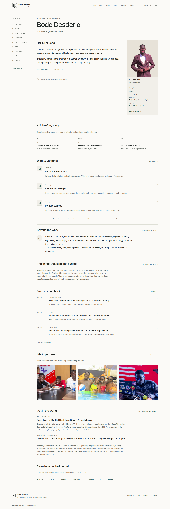

The earlier product-style concept has been replaced. The new design is implemented in the Next.js application: personal biography, work, writing, community, photographs, search, and reading preferences.
